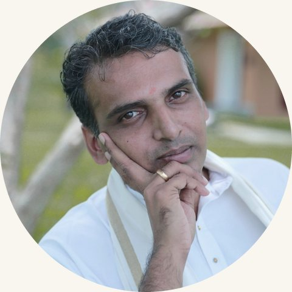
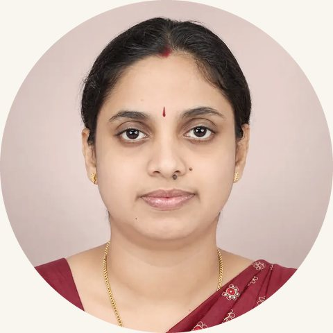

Modern medicine is brilliant at treating illness. Ayurveda adds a different question: who are you, really? Your constitution, your season, your state — all shape what nourishes and what harms you. AYULYFE brings this timeless intelligence to your daily life.
🌿
Your Unique Constitution
Ayurveda recognizes three doshas — Vata, Pitta, Kapha — that shape your physical, mental, and emotional tendencies.
🔥
Dynamic, Not Static
Your needs shift with the seasons, your age, and your daily conditions. AYULYFE adjusts in real time.
✦
Centuries of Evidence
Unlike trendy diets, Ayurvedic principles have guided human health for over 5,000 years — and they've endured for a reason.
How It Works
Wellness that knows you
01
Discover Your Dosha
Answer a few thoughtful questions. AYULYFE identifies your Prakriti — your unique physical, mental, and functional constitution.
02
Assess Your Agni
Take the Agni quiz to understand the strength and type of your digestive fire — the foundation of all health in Ayurveda.
03
Live in Balance
Daily insights, seasonal adjustments, and curated programs keep your wellness evolving as your life does.
The Team Behind AYULYFE
Business, technology and Ayurveda
AYULYFE was founded by a team of business, technology and Ayurveda experts. Natalia Barsegiyan brings more than 30 years of leading consumer businesses across the USA, UK and Europe, and Sergey Orlov 25 years as a CIO and CTO. The Ayurvedic knowledge behind every Dosha and Agni assessment, every recommendation and every program is represented by two Kerala-trained Ayurvedic physicians with more than 40 years of clinical experience between them.

Vaidya Sreelal Sankar
Co-Founder & Head of Ayurveda
BAMS · Kottakkal
25 years in clinical practice
Ananda in the Himalayas
Born into a family of traditional Ayurvedic physicians in North Kerala, Vaidya Sreelal leads Ayurvedic medicine at Ananda in the Himalayas, one of the world's leading wellness retreats. He combines classical Ayurvedic diagnosis with modern science.
In AYULYFE
Leads the Ayurvedic methodology behind every Dosha and Agni assessment and your personal recommendations.
Read full bio
Vaidya Sreelal Sankar is Co-Founder and Head of Ayurveda at AYULYFE, bringing 25 years of clinical leadership to the app's Dosha and Agni science. Born into a lineage of traditional Ayurvedic physicians in North Kerala, he trained in Bachelor of Ayurvedic Medicine and Surgery (BAMS) at V.P.S.V. Ayurveda College, Kottakkal, and holds a Post Graduate Diploma in Bioinformatics from IBAB, Bengaluru. He has served as Chief Physician at CGH Earth Ayurveda's Kalari Rasayana and Kalari Kovilakom, and currently leads Ayurvedic medicine at Ananda in the Himalayas, one of the world's leading integrative wellness retreats. Vaidya Sreelal specializes in musculoskeletal, metabolic, and autoimmune conditions, pairing classical Prakriti and Panchakarma diagnostics with modern blood chemistry and bioinformatics — the same fusion of ancient and evidence-based science built into every AYULYFE assessment.

Vaidya Poornima Sreelal (Mukkanniyil)
Co-Founder & Clinical Nutrition Lead
BAMS · M.Sc. Clinical Nutrition
15+ years in practice
Founder, AyurCulinary
An Ayurvedic physician and clinical nutritionist, Poornima has led dietetics at international wellness retreats and is the author of Wellness Roots and Customize Your Diet.
In AYULYFE
Designs the diet and lifestyle guidance in the AYULYFE library and in every program.
Read full bio
Poornima Sreelal (Mukkanniyil) is Co-Founder and Clinical Nutrition Lead at AYULYFE, an Ayurvedic Physician (BAMS) and Clinical Nutritionist (M.Sc. CND, Trivandrum Medical College) with 15+ years bridging classical Ayurvedic dietetics and modern nutrition science. She is Founder of AyurCulinary, a global CPD-certified education platform, and has led dietetics at Sivananda Yoga Vedanta Retreat (Austria) and Kalari Rasayana (CGH Earth), advising international clients across Europe, North America, the Middle East, and Asia. Author of Wellness Roots and Customize Your Diet, Poornima designs the personalized diet and lifestyle guidance behind AYULYFE's Dosha and Agni programs, translating 5,000-year-old nutritional wisdom into daily, actionable recommendations.
In Ayurveda, Agni — your digestive fire — is the cornerstone of all health. When balanced, you absorb nutrients fully, maintain energy, and resist disease. When disturbed, even the healthiest food can become toxin.
The AYULYFE Agni Quiz assesses your unique digestive pattern and gives you a personalized roadmap to restoring your inner fire.
🌊
Vishama Agni
Irregular — linked to Vata. Variable appetite, bloating, constipation.
Your constitution and digestive fire are your compass. AYULYFE translates that knowledge into structured programs — each one designed around who you are, not a generic blueprint.
Download AYULYFE free and explore your Dosha, Agni and personalized recommendations at no charge. Deepen your practice with full wellness programs available through in-app purchase.
On a computer? Scan with your phone's camera to get the app for iPhone or Android.
Free Dosha quiz across 3 dimensions
Free Agni assessment — understand your digestive fire
Personalized diet & lifestyle recommendations
Curated Ayurvedic articles and daily insights
Full wellness programs — available via in-app purchase
Disease prevention focus — not just weight loss
Common Questions
Everything you need to know about Ayurveda & AYULYFE
What is AYULYFE?
AYULYFE is a free Ayurvedic wellness app available on iOS and Android. It identifies your Dosha — your unique biological constitution (Vata, Pitta or Kapha) — and your Agni digestive fire type, then delivers fully personalized diet, lifestyle, and seasonal wellness recommendations rooted in 5,000 years of Ayurvedic science.
Who created AYULYFE?
AYULYFE was founded by a team of business, technology and Ayurveda experts. Natalia Barsegiyan, a global executive with more than 30 years of leading consumer businesses across the USA, UK and Europe, and Sergey Orlov, a technology leader with 25 years in CIO and CTO roles, lead the business and the product. The Ayurvedic side is represented by two Kerala-trained Ayurvedic physicians (BAMS): Vaidya Sreelal Sankar, Co-Founder and Head of Ayurveda, with 25 years of clinical experience, who leads Ayurvedic medicine at Ananda in the Himalayas and the methodology behind the app's Dosha and Agni assessments; and Vaidya Poornima Sreelal (Mukkanniyil), Co-Founder and Clinical Nutrition Lead, an Ayurvedic physician and clinical nutritionist with more than 15 years of experience and the founder of AyurCulinary, who designs the app's diet and lifestyle guidance. AYULYFE is an Organizational Member of the National Ayurvedic Medical Association (NAMA).
What is a Dosha in Ayurveda?
A Dosha is your biological constitution — the unique blend of elemental energies that governs your physical structure, physiological functions, and psychological tendencies. The three Doshas are Vata (Air and Space), Pitta (Fire and Water), and Kapha (Earth and Water). Most people have a dominant Dosha or a blend of two. Your Dosha explains your body type, digestion, sleep patterns, emotional responses, and the diet and lifestyle that keep you in balance.
What is the difference between Vata, Pitta and Kapha?
Vata (Air & Space) governs movement. Physically: light frame, dry skin, irregular digestion. Psychologically: creative, quick-thinking, enthusiastic — prone to anxiety when imbalanced. Pitta (Fire & Water) governs transformation. Physically: medium muscular build, strong metabolism. Psychologically: sharp, driven, decisive — prone to irritability when imbalanced. Kapha (Earth & Water) governs structure. Physically: larger build, strong immunity. Psychologically: calm, compassionate, loyal — prone to lethargy when imbalanced.
What is Agni in Ayurveda?
Agni is the Ayurvedic concept of digestive fire — the metabolic intelligence governing digestion, nutrient absorption, and the processing of experiences. The four types are Sama Agni (balanced, ideal), Vishama Agni (irregular, linked to Vata imbalance), Tikshna Agni (sharp and intense, linked to Pitta excess), and Manda Agni (slow and sluggish, linked to Kapha dominance). AYULYFE's Agni quiz identifies your type and provides a personalized restoration plan.
How does AYULYFE personalize recommendations?
AYULYFE uses two assessments: a Dosha quiz that identifies your Prakriti (constitutional type) across physical, physiological and psychological dimensions, and an Agni quiz assessing your current digestive capacity. These results are combined with seasonal context to generate daily diet guidance, lifestyle rituals and curated wellness programs specific to your constitution.
Is AYULYFE free?
AYULYFE is free to download on iOS App Store and Google Play. Your Dosha quiz, Agni assessment and initial personalized recommendations are available at no charge. Full wellness programs and advanced features are available through in-app purchase.
How does Ayurveda work alongside modern medicine?
Ayurveda does not replace modern medicine — it complements it. Where general health guidance is designed to suit most people, Ayurveda looks at the individual: the same food can suit one person and unsettle another, depending on their Dosha and current state. It also adapts recommendations to the season, time of day and stage of life. AYULYFE brings this personalised approach into your daily routine, alongside the care you receive from your doctor.
Guided Programs
Programs for every journey
Structured Ayurvedic programs designed around your unique constitution and needs — whether you're detoxing, de-stressing, or building lasting vitality.
Vata
Pitta
Kapha
6 programs
🍂
All Doshas
21 Days
Seasonal Detox
Align your body with the rhythms of nature. Cleanse accumulated toxins and reset your digestive fire.
🧘
Vata · Pitta
14 Days
Stress Reset
Calm an overactivated nervous system with Ayurvedic adaptogens, breathwork, and restorative routines.
🌿
All Types
30 Days
Longevity
A Rasayana-inspired program rooted in Ayurvedic rejuvenation science for vitality and graceful aging.
🔥New
🔥 Agni Focus
10 Days
Digestive Restore
Rebuild your Agni from the inside out. Targeted protocols for each of the four Agni types.
🌸
Kapha Focus
14 Days
Spring Awakening
Shake off winter's heaviness. A Kapha-balancing cleanse to restore lightness, clarity, and vitality.
🌊New
Pitta Focus
7 Days
Pitta Cooling Reset
Cool excess heat before it becomes imbalance. Targeted foods, rituals, and breathing for Pitta.